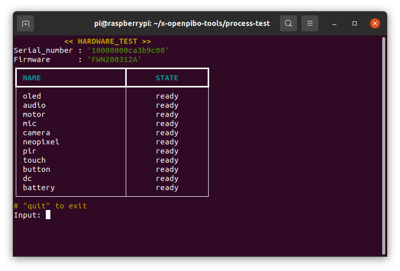
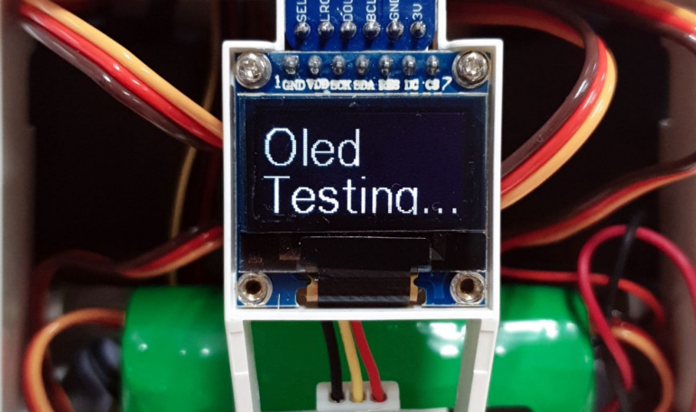
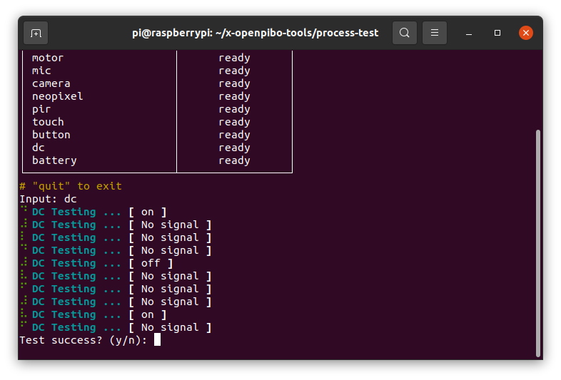
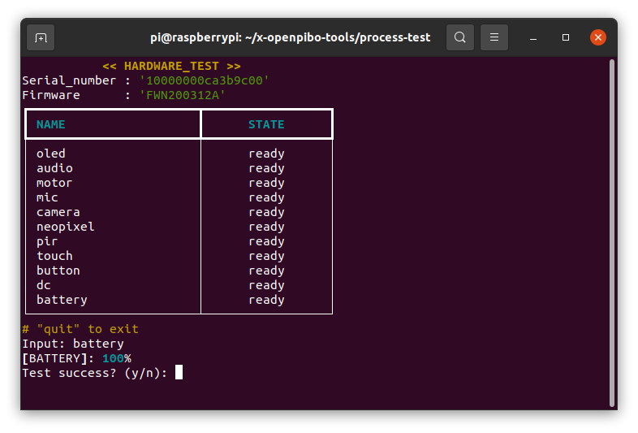
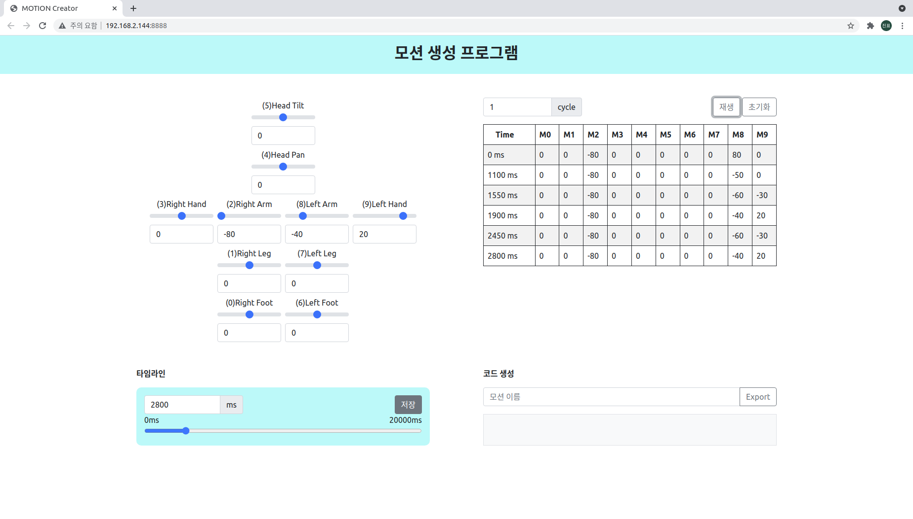
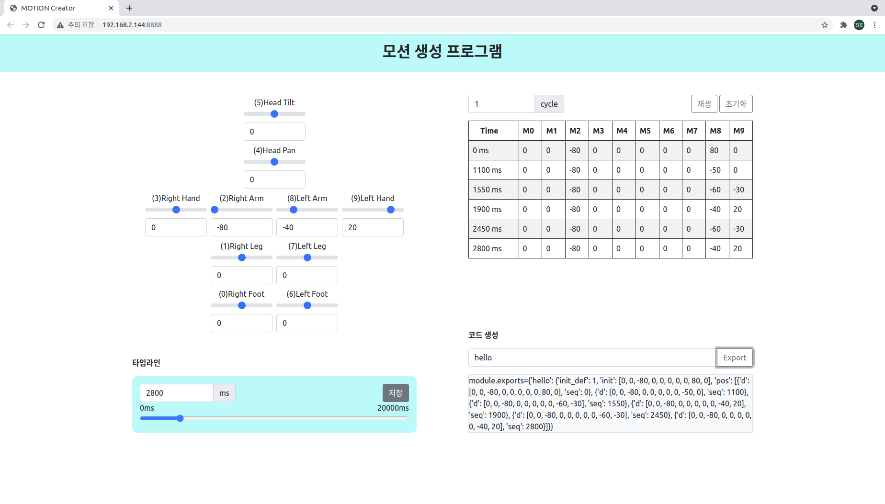
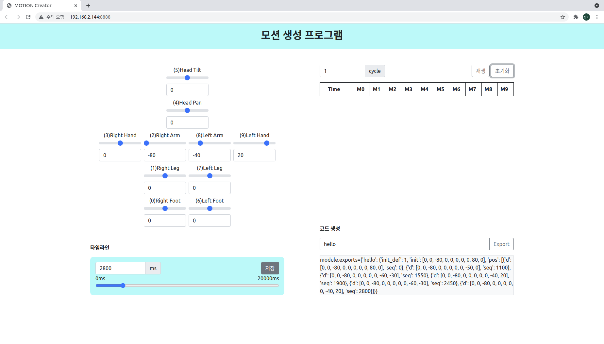

Tools x 지워야 함¶
파이보 사용에 도움이 되는 각종 도구입니다.
process-test
For Part test
motion-creator
motion create using web service
under construction
device-simulator
device control using web service
Process Test¶
파이보 부품들의 정상 동작 여부를 테스트하는 프로그램입니다.
사용 방법
>>> cd ~/x-openpibo-tools/process-test
>>> sudo python3 main.py

Command¶
oled : OLED 패널을 테스트합니다.
파이보 OLED 화면에
Oled Testing...이라고 출력

audio : 스피커를 테스트합니다.
5초간 음악 재생 -> 2초 음소거 -> 5초간 음악 재생 -> 음악 중지
motor : 서보모터의 작동을 테스트합니다.
모터당 3회씩 동작하며, 하나라도 작동이 안되면 실패 입니다.
순서는 아래와 같습니다.
foot_rightleg_rightshoulder_righthand_righthead_panhead_tiltfoot_leftleg_leftshoulder_lefthand_left
mic : 마이크를 테스트합니다.
5초간 음성을 녹음합니다.
(아래 화면이 출력됩니다)
5초 뒤 녹음한 음성이 그대로 출력되는지 확인합니다.
camera : 카메라를 테스트합니다.
OLED 화면에 5초간 카메라 캡쳐 이미지 출력 후 꺼짐

neopixel : LED (파이보 눈) 를 테스트합니다.
R -> G -> B 순서대로 변함 (각 2초씩)
pir : PIR 센서를 테스트합니다.
20초간 테스트 진행, 1초마다 테스트 메시지 출력
파이보 앞에 사람이 있으면
[ person ]메시지 출력사람이 없으면
[ nobody ]메시지가 출력되며, 다시 사람이 올때까지 메시지 출력 중지
(테스트 결과는 아래 화면처럼 출력됩니다)

touch : 터치센서를 테스트합니다.
10초간 테스트 진행, 1초마다 테스트 메시지 출력
파이보 이마를 쓰다듬으면
[ touch ]메시지 출력단, 계속 쓰다듬으면 소용이 없고, 쓰다듬기 시작할때만 출력
이마를 쓰다듬지 않으면
[ No signal ]메시지 출력
(테스트 결과는 아래 화면처럼 출력됩니다)
button : 전원 버튼을 테스트합니다.
10초간 진행, 1초마다 테스트 메시지 출력
전원버튼을 누르고 있으면
[ on ]메시지 출력(한번만 눌렀다 떼면 신호를 감지하지 못 함)
전원버튼을 누르지 않으면
[ No signal ]메시지 출력
(테스트 결과는 아래 화면처럼 출력됩니다)

dc : 충전기 연결상태를 테스트합니다.
10초간 진행, 1초마다 테스트 메시지 출력
충전기를 연결할 때
[ on ]메시지 출력충전기 연결을 해제할 때
[ off ]메시지 출력충전기 연결상태에 변화가 없을 때
[ No signal ]메시지 출력
(테스트 결과는 아래 화면처럼 출력됩니다)

battery : 배터리를 테스트합니다.
배터리 잔량 화면에 표시
(테스트 결과)

quit : 테스트를 종료합니다.
테스트 종료 및 테스트 결과 반환

Motion Creator¶
파이보의 동작을 생성하는 툴 입니다.
Chrome브라우저 사용을 권장합니다.
사용 방법
>>> cd ~/x-openpibo-tools/motion-creator
>>> sudo python3 main.py --port 8888
프로그램을 시작합니다.
--port: 연결할 포트를 입력합니다. 만약 설정하지 않으면, 기본 포트는8888입니다.
이후
http://<PIBO IP>:<PORT>에 접속합니다.(출력된 주소를
ctrl + click해도 됩니다)모션을 생성합니다.

왼쪽은 모터를 제어하는 부분이고, 오른쪽은 저장된 모션이 보여지는 부분입니다.
왼쪽의 입력값을 조작하면 파이보의 모터가 실시간으로 움직입니다.
시간을 설정하고 아래 저장 버튼을 누르면 오른쪽 테이블에 동작 하나가 추가됩니다.
(시간은 50ms 간격으로 설정할 수 있습니다.)

동작테이블 각 행에 마우스를 올리면 빨간색으로 변하고, 클릭하면 해당 동작이 삭제됩니다.

동작을 테스트하려면, 우측 상단의
재생버튼을 누릅니다.cycle을 설정해 여러번 반복할 수도 있습니다. (cycle이 3이면, 동작이 3번 반복됩니다.)
우측 하단 입력창에 모션 이름을 적고
Export버튼을 누르면, 코드가 생성됩니다.
또한
/motion-creator/경로에<모션 이름>.json의 이름으로도 저장된 것을 확인할 수 있습니다.
우측 상단의
초기화버튼을 누르면, 기록했던 동작들이 모두 초기화됩니다.
생성한 모션을 사용합니다.
>>> from openpibo.motion import Motion >>> pibo_motion = Motion() >>> pibo_motion.set_profile('hello.json') # 생성된 json 파일 경로 입력 >>> pibo_motion.get_motion() # ['hello'] >>> pibo_motion.set_motion('hello') # 동작 실행
또는 생성한 파일에서 코드를 복사해서 사용할 수 있습니다.
Device Simulator¶
파이보의 device를 제어할 수 있는 툴 입니다.
디바이스 부품(neopixel, battery, dc, button, pir, touch)을 제어하거나 상태를 확인할 수 있습니다.
Chrome브라우저 사용을 권장합니다.
사용 방법
cd ~/x-openpibo-tools/device-simulator
sudo python3 main.py --port 8888
프로그램을 실행합니다.
--port: 연결할 포트를 입력합니다. 만약 설정하지 않으면, 기본 포트는8888입니다.이후
http://<PIBO IP>:8888에 접속
죄측 입력 바를 조작하여 Neopixel 을 제어할 수 있습니다.


우측 테이블에서는 디바이스 상태 정보를 확인할 수 있습니다.
배터리 잔량
전원케이블 연결 상태
전원버튼 누름상태
PIR센서 신호
터치센서 신호